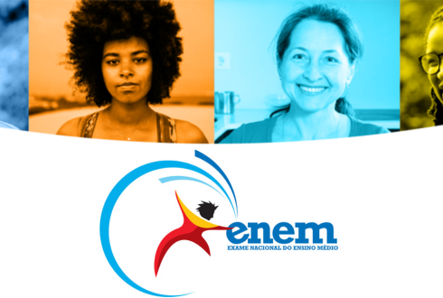

Enem
Se inscrever no Enem 2025!
O Enem é uma prova do Governo Federal que avalia o desempenho individual dos participantes. Para quem já tem o certificado de nível médio (ou vai tirar o certificado neste ano). Você também pode fazer o Enem se quiser apenas testar seus conhecimentos. Os resultados de todas as provas são importantes para gerar os indicadores educacionais do país.
Colaboradores: Assessoria de Comunicação Social do Inep
O prazo para se inscrever no Exame Nacional para Certificação de Competências de Jovens e Adultos (Enem) 2025 está acabando! As notas do Enem podem ser usadas para acesso ao Sistema de Seleção Unificada (Sisu) e ao Programa Universidade para Todos (ProUni). Elas também são aceitas em instituições de educação superior portuguesas que têm acordo com o Instituto Nacional de Estudos e Pesquisas Educacionais Anísio Teixeira (Inep). Além disso, os participantes do Enem podem pleitear financiamento estudantil em programas do governo, como o Fundo de Financiamento Estudantil (Fies). Os resultados do Enem possibilitam, ainda, o desenvolvimento de estudos e indicadores educacionais.
Faça já sua inscrição!
Para realizar sua inscrição, siga os passos abaixo:
- Clique no botão abaixo.
- Informe seus dados pessoais.
- Pague a taxa de inscrição.
O Exame Nacional do Ensino Médio (Enem)
Qualquer pessoa que já concluiu o ensino médio ou está concluindo a etapa pode fazer o Enem para acesso à educação superior. Os participantes que ainda não concluíram o ensino médio podem participar como “treineiros” e seus resultados no exame servem somente para autoavaliação de conhecimentos.